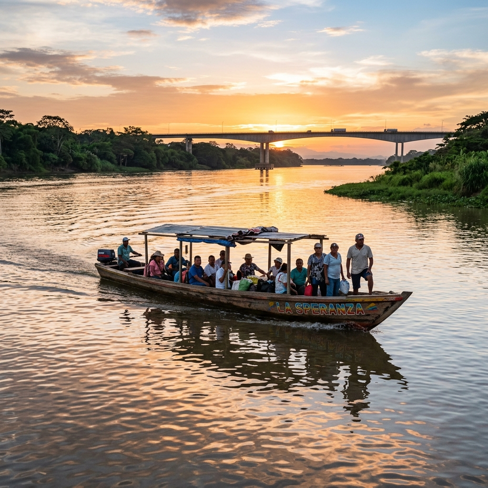

Ruta cocreación 2 · 2 noches / 3 días
Descubre el corazón ganadero del Magdalena Medio
Recorrido patrimonial por Puerto Berrío, navegación entre puentes, sala lechera La Ganadera, show del queso en Colbúfala, día en la Ciénaga de Barbacoas y cierre con fogata en Finca Las Camelias.
Público objetivo: profesionales y familias que buscan involucrarse en las experiencias del territorio.
Punto de encuentro: Parque Principal o Casa del Río Hotel.
Actores participantes: Casa del Río Hotel, guía historiador, operadores de lancha del río Magdalena (Biochicoas / Descúbrelo Tours), Sala Lechera La Ganadera, Colbúfala, Ranchería de la Ciénaga de Barbacoas y Finca Las Camelias.
Itinerario día a día
Recibimiento en Parque Principal / llegada al hotel
Recorrido urbano por el territorio
Almuerzo en el puerto
Recorrido en lancha puente a puente
Visita a la Sala Lechera La Ganadera
Show del queso caliente
Cena con producto bufalino
Avistamiento del amanecer
Movilización en lancha del río a la ciénaga
Llegada a la ranchería y desayuno
Navegación por la ciénaga
Almuerzo con música en vivo
Retorno al puerto
Movilización a finca ganadera
Cena asado e integración alrededor de la fogata
Desayuno en la finca
Compras y actividades complementarias
Retorno a Puerto Berrío
Salida a Medellín